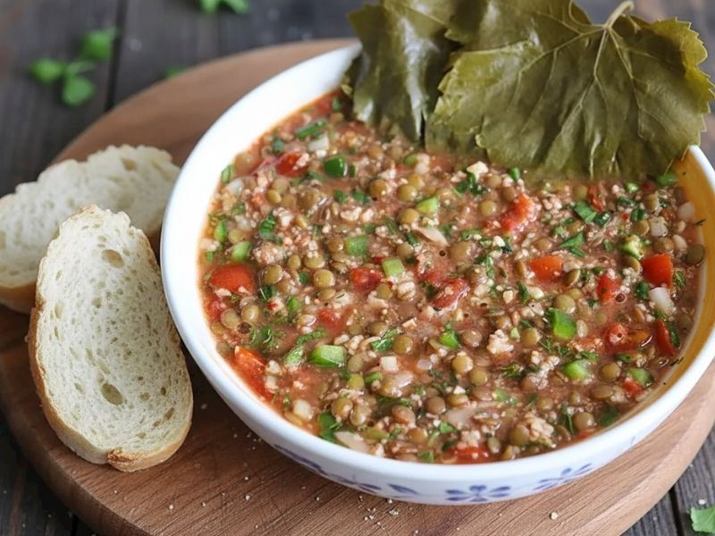
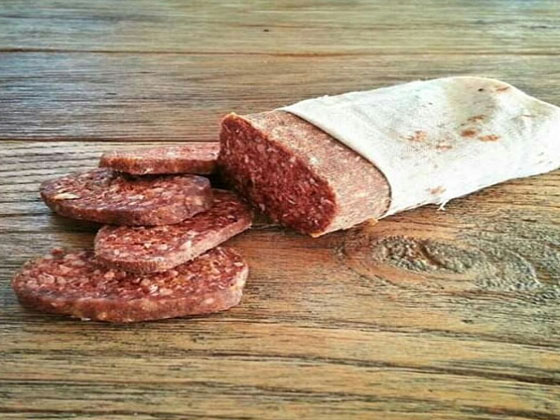
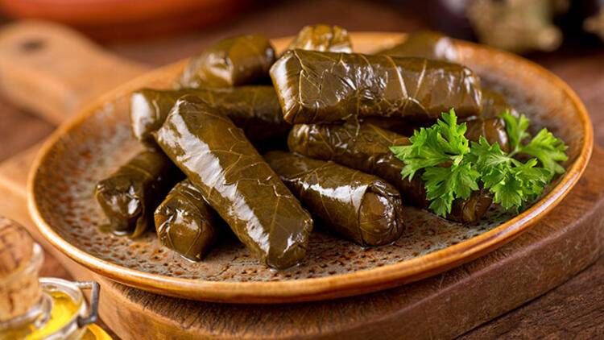
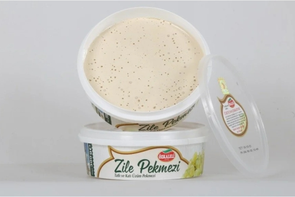

Ana Sayfaya Geri Dön
Tokat'ın Meşhur Yemekleri
Tokat'ın lezzetli yemekleri, bölgeyi zenginleştiren önemli bir kültürel mirastır. Birçok farklı yemek çeşidiyle tanınır.





En Meşhur Yemeklerimiz
- Bat: Tokat'a özgü, mercimek, ince bulgur ve cevizle hazırlanan, asma yaprağıyla tüketilen eşsiz bir soğuk yemektir.
- Bez Sucuk: Tokat'ın meşhur baharatlarıyla hazırlanan ve bez torbalarda kurutulan geleneksel fermente sucuğudur.
- Keşkek: Özellikle bayram ve düğünlerin vazgeçilmezi olan, dövülmüş buğday ve etin uzun süre pişmesiyle oluşan nefis bir lezzettir.
- Sarma: Dünyaca ünlü Tokat asma yaprağıyla yapılan, incecik dokusuyla damaklarda iz bırakan geleneksel zeytinyağlıdır.
- Zile Pekmezi: Şifalı ve lezzetli, meşhur beyaz rengiyle bilinen yöresel bir tatlıdır.
Eğer yolunuz Tokat'a düşerse, çarşı içindeki lokantalarda bu lezzetleri mutlaka denemelisiniz!